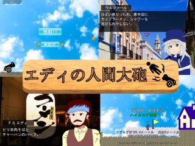
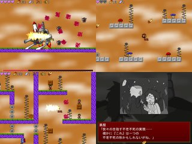
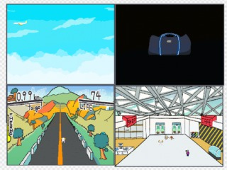
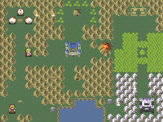

■2019-08-25 (日) 第11回ウディコン結果発表！▼
ということで毎年の夏のお楽しみ、「WOLF RPGエディターコンテスト」も
8/24をもってとうとう結果発表＆閉幕となりました！
【WOLF RPGエディターコンテスト 公式サイト】
今年の第11回も魅力的な作品が勢揃いでした。
今回は例年の通り、まず上位3作品についてご紹介します！
【第１位 エディの人間大砲】 Dot蜥蜴 様

総合1位は、ウディタサンプルゲームでおなじみのエディが
人間大砲師として活躍するマウスアクションゲーム！
ゲーム面は人間大砲でパワーと方角を設定して撃ち出された後、
マウスクリックで加速（というより上昇？）、
ブレーキをして目的地点に着地するという内容で、
シンプルながら制御しがいがあり、リトライもしやすく、
ストーリーと合わせて非常によくまとまった作品でした。
独特の挑戦をしているのに気になる悪い点がほぼ見つからないというのはすごい！
（あったとしても、大砲の角度調整のボタンが、
「左が上、右が下」だと直感的でなおうれしかったことくらいです）
ウルファールとエディとの掛け合い、やたらと渋いストーリーもウディコンでは珍しく、
熱中度と斬新性のほかに物語性1位を獲得したのも納得の出来でした。
この作品は、私が運営としてエントリーチェックをしている際、
ちょっと始めてみたらお話もゲーム部分も面白くて進める手が止まらず、
オープニングだけチェックするつもりがついつい最後まで遊んでしまった一作です。
これだけの高評価を得たということは
おそらく他の多くの方にとっても同じ流れだったはずで、
画像音声の順位がさほど高くなくとも優勝できた理由が分かる納得の面白さでした。
【第2位 ヴァーミリオンの青空】 秋月ねこ柳 様

1位も面白いけど、もっとゲームとしてのやり応えが欲しいかも！
と思われた方におすすめしたいのが、このアクションゲーム『ヴァーミリオンの青空』！
ゲームの「造り」が、私も絶賛したいくらいきれいな一作！
鳥人の少女がエリアごとに区切られた塔を上っていくゲームなのですが、
仕組みとして面白いのが、羽根を取ることで「パワー」を増やしていける点！
この「パワー」は、100％あれば空中でも1回追加ジャンプすることができ、
ステージに点在する羽根を取るごとに少しずつ増やしていけます。
少しずつパワーを増やしていき、最初は2回ジャンプしかできなかった状態から、
パワーが200％に達して3回ジャンプできるようになったときの
行動自由度が高まる瞬間の嬉しさといったらそれはもう！
普通、「ジャンプ回数を増やす」といったら、仰々しいところにおさまっている
専用アイテムを拾ってやりそうなものですが、この作品はそうでなく、
「少しずつ増やしていって一区切りするたびに増える」というのが、
ゲームを進めるモチベーションとして大きく機能しており、
非常にすばらしい点だと感じました。
もちろんその後も4回、5回とジャンプ数を増やしていける上、
ジャンプ以外にも様々なアクションを割とテンポよく解放していけるのが、
ゲームバランス的にとても美しく、モチベーションをすごく高められる形式で、
とても見習いたいと思える内容でした。
熱中度部門で6年ぶりに中央値9点（※）を獲得したのも納得の面白さです。
（※これは半数以上の人が10点満点中の「9点」を付けたという意味で、
これはとんでもない高評価です！）
他にも1エリアごとにライフが回復したりセーブできたりテレポート機能もありと、
遊びやすさの面で徹底した配慮がおこなわれているのもすばらしい点！
能力を解放するたびに見られる、やや残酷表現のあるお話も個人的に好きでした。
【第3位 PRESS START】 初 様
非常に美しいドット絵で描かれた、少年と幽霊の少女が
思い出の島をめぐる探索アドベンチャーゲームです。
キャラクターのドット絵もかわいらしく魅力的ですが、
各マップの作り込みがすさまじい！
遠近感の演出も楽しく、特に細かなパーツへのこだわりなどは
そうそうにマネできるものではないでしょう。すごい！
画像音声部門で10点じゃ足りないという方もいらっしゃいましたが、
気持ちも分かります。
もちろんキャラクターの内面も個性的かつ魅力的で、
美しく不思議さも感じられる世界と合わせて、探索アドベンチャーとして
ゲームを進めていくモチベーションにつながる品質だと感じます。
マップの広さに対して移動速度は少しゆっくりめなので、
まったりと不思議な島での観光を楽しみたい気分の人にとてもぴったりだと思います。
お着替えすると立ち絵も変わるのが興奮しました。
【個人的にプッシュしたいゲーム】
ここからは趣味の時間です。私が個人的にプッシュしたい作品をご紹介！
【ゴートマウンテン】 ハニーナゲット 様

羊が道を進みランダムイベントをこなして山頂を目指すゲーム！
と、それだけならちょっとした一本道ローグライクゲームっぽさを感じますが、
すごいのはイラストの数や全体のおしゃれな雰囲気！
遊ぶほどに見たことのないイラストが惜しげも無く出てくるわ、
主人公のヤギ氏がかわいいわで、
遊んでいるだけでほのぼのした幸福感が出てくるゲームです。
道中はハードですが、よい解答を覚えるほどに
より良い選択ができるようになっていきます。
ほのぼの雰囲気を味わうだけでも大きな価値があると思える一作です。
【小説家シミュレーター】 シブサワ・コウの名を継ぐ者 様

芥川賞ってこんなんだっけ……？ と思いながら
小説家人生をシミュレーションできる一作！
軽くチェックするつもりがつい1周最後まで遊んでしまって、
最後は自分が書いたはずの変なタイトルの作品名とあらすじに笑ってしまった作品です。
地味にリアリティを感じる出版部数に色々と感じさせられます。
生成した小説がすごくSNS映えしそうで、
「これ他の人にも見せたい！」と思わせる造りとしては
本ウディコンの中で一番ヒットしている作品ではないかと感じました。
【トリアージ勇者】 にょんにょんバード 様

第一印象は「タイトル画面がない！ これ大丈夫かな？」と思いましたが、
少し進めていくと数値がかなり緻密に設定されていることが分かったり、
工夫次第で無限にできる行動が一切なかったり、
リソースの消費のしかたも判断が求められる形になっていて、
「何を捨て、何を得るか」を試行錯誤していくのが面白い作品だと分かりました。
HPで引くガチャでプリースト（HP回復できる）が引けると、
さらにガチャが引けてラッキー！
と思っていたら運要素がいらないルートがあることに気付き、
世界に対する意識が一変するところがこのゲームの最も面白いところです。
【クローン実験体#000の選定テスト-バトルロイヤル1日目-】 ピジョン 様

これを見たとき「あー最近はやりのゲームをこういう形に落としこむことを
なぜ一度も考えられなかったんだーうおー！」と思った作品です。
内容としては、「100人が戦場に落とされ、その戦場が時間と共に狭くなるので
ムリヤリにでも戦わせられ、最終的に残った1人が勝者」という形式の、
バトルロワイヤルのゲームです。
FPS、TPSゲームの業界ではこのシステムが最近流行していて、
色んなゲームで取り入れられつつあるのですが、
本作のようにターン制のゲームに落とし込んでみたらどうなるか、
という発想を全然思いつかなかったので「やられた！」と思った一作です。
自分の頭の堅さを思い知らされます。
ウディコン内ではその挑戦だけでは評価されにくいためか
順位としては圏外でしたが、その発想力と、
実際に形にしてみようと考えた行動力は個人的にとても評価したい点です！
思いついていたら自分も一回作ってみたいなと思えた作品です。
この他にも方向性の異なる面白い作品が
総合順位の上位にピックアップされていますので、
部門別の評価やコメントなども見ながらよければ遊んでみてくださると幸いです。
今年は基本画像のゲームですら「この面白さを伝えたい！」というのが
伝わる作品が多く、すそ野の強さがどんどん上がっている感触がありました。
来年も楽しみにしています！
【WOLF RPGエディターコンテスト】
【今後について】
今後の開催予定についてですが、
ウディコンは来年2020年に「第12回」を開催する予定です。
もう第12回のスケジュールも決定済みです。残り32X日から始まるカウントダウンも、
気が付くといつの間にか0日になってるので時が流れるのは早い！
第11回ウディコンに関わってくださった全ての関係者の皆さま、
今年も本当にありがとうございました！
よければ来年も、ぜひ見ていただけますと幸いです。
2019-08-25 (日)  カテゴリ: ウディタ
カテゴリ: ウディタ
 カテゴリ: ウディタ
カテゴリ: ウディタ